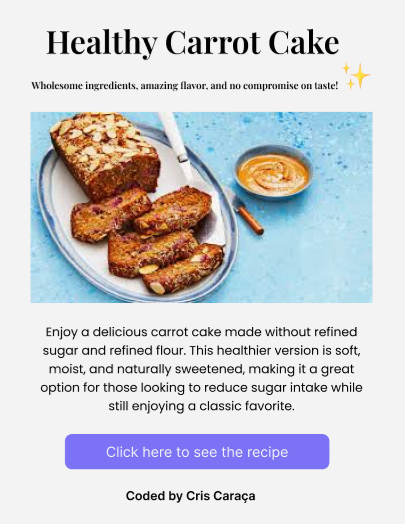
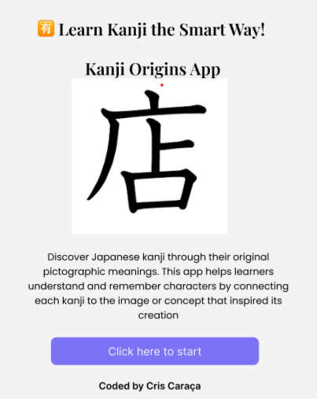
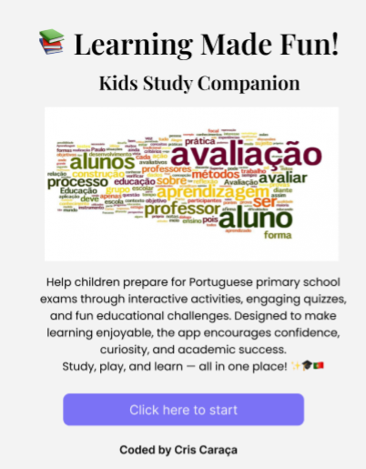

Find my best projects here

This project is a healthy recipe website featuring sugar-free meals and desserts for people with insulin resistance or diabetes. The inspiration came from my personal experience after my 12-year-old autistic son developed insulin resistance. All recipes were created and tested based on the meals I prepare for my family, focusing on nutritious ingredients and balanced nutrition without sacrificing flavor. The website was designed to provide practical, delicious, and accessible recipes while offering a clean and responsive user experience across different devices. This project combines my interest in web development with my passion for helping families adopt healthier eating habits.
Learn MoreThis project is an educational website designed to help students learn Japanese kanji through their original pictographic meanings. Instead of relying solely on memorization, the platform connects each character to the image or concept that inspired its creation, making learning more intuitive and engaging. The website features a clean, user-friendly design and aims to simplify the study of kanji by transforming complex characters into memorable visual associations. By combining education and technology, this project provides an effective and enjoyable learning experience for Japanese language learners of all levels. 🇯🇵
Learn More

This project is an educational app designed to help children in Portuguese primary education learn and prepare for school assessments in a fun and engaging way. Through interactive quizzes, educational games, and age-appropriate activities, the app encourages learning while keeping students motivated and entertained. With a simple, colorful, and user-friendly interface, the app makes studying more enjoyable and helps children build confidence in subjects such as Mathematics, Portuguese, and Science. By combining education and play, this project aims to create a positive and effective learning experience for young students. 🇵🇹
Learn More